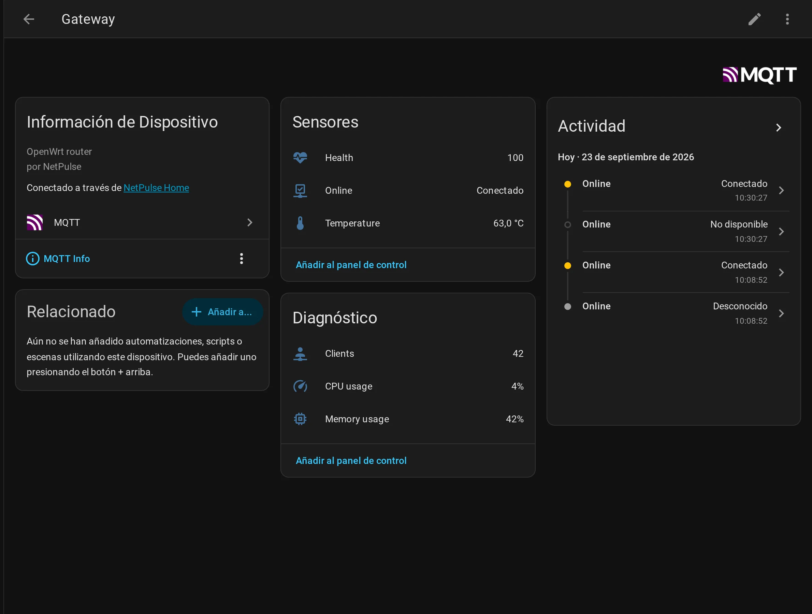
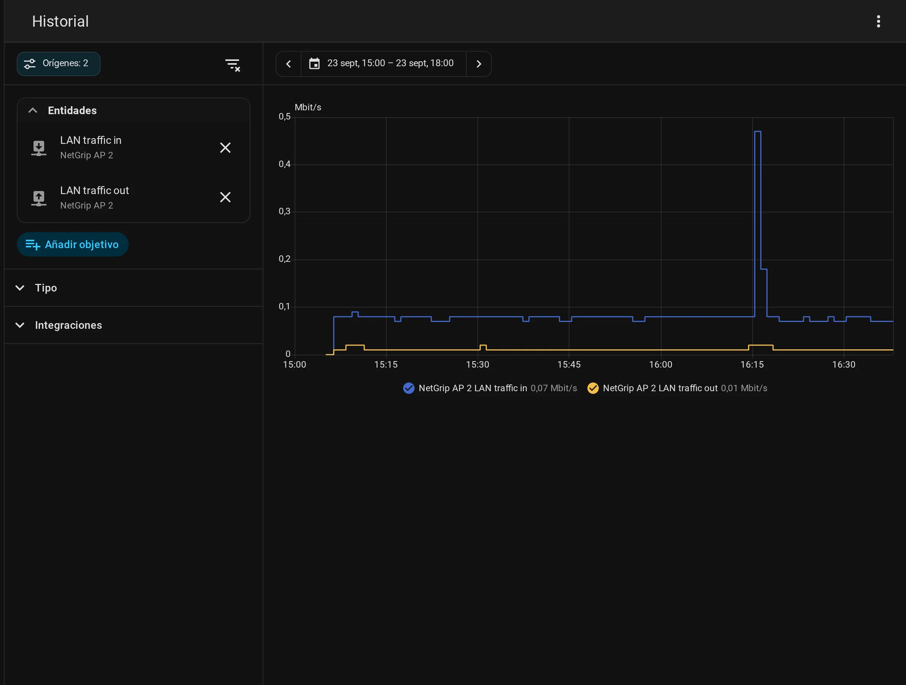

NetPulse publica el estado de la flota en un broker MQTT y Home Assistant lo descubre solo: crea los dispositivos y sus entidades sin que definas nada a mano. Todo ocurre en tu red local.
NetPulse escribe el estado de tu red en el broker MQTT que ya tienes para Home Assistant. A partir de ahí, los routers y sus métricas están disponibles para paneles, automatizaciones y avisos, igual que una luz o un sensor de temperatura.
Un dispositivo con la salud global (puntuación y etiqueta), los clientes online y totales, los routers online y totales, y las alertas sin leer.
Un dispositivo por router con si está en línea, su salud, CPU, memoria, temperatura y número de clientes. Vinculado a la instalación, para agruparlo en el panel.
Cada alerta se publica como evento en el momento en que se dispara (temperatura, WAN caída, dispositivo nuevo...), para que la conviertas en la automatización que quieras.
NetPulse escribe, no escucha: es un publicador. Desde Home Assistant lees la red; para actuar sobre un router se usa NetGrip, su panel, que habla MQTT igual y sí acepta órdenes.
Viene desactivado: hasta que lo enciendas, NetPulse no publica nada. Se configura por variables de entorno (o opciones UCI en el modo on-box).
NETPULSE_MQTT_ENABLED=1
NETPULSE_MQTT_HOST=10.0.0.10
NETPULSE_MQTT_USER=netpulse
NETPULSE_MQTT_PASS=...
NETPULSE_MQTT_INSTANCE=casa
Tras reiniciar, el registro muestra «[mqtt] connected ... as instance "casa"». El primer estado tarda como mucho un intervalo.
Un dispositivo para la instalación y uno por router, colgando del primero. Estas son las entidades que se crean solas:
| Dispositivo | Entidad | Tipo | Unidad |
|---|---|---|---|
| NetPulse <instancia> | Health score | sensor | |
| Clients online | sensor | ||
| Routers online | sensor | ||
| Unread alerts | sensor | ||
| NetPulse version | sensor (diagnóstico) | ||
| cada router | Online | binario (conectividad) | |
| Health | sensor | ||
| CPU usage | sensor | % | |
| Memory usage | sensor | % | |
| Temperature | sensor | °C | |
| Clients | sensor (diagnóstico) |
Si un router lleva NetGrip con su MQTT activado, es NetGrip quien lo expone a Home Assistant y NetPulse no lo publica: solo verás un dispositivo por router.

El dispositivo de un router en Home Assistant, con sus entidades creadas por descubrimiento.
NetPulse solo publica, pero los routers que llevan NetGrip (su panel) también aceptan órdenes por MQTT. Con NetGrip activado, Home Assistant no solo ve el router: lo maneja.
| Acción | Topic de orden | Valor |
|---|---|---|
| WiFi de invitados | netgrip/<router>/command/guest_wifi | ON / OFF |
| banIP | netgrip/<router>/command/banip | ON / OFF / RELOAD |
| IPv6 | netgrip/<router>/command/ipv6 | ON / OFF |
| SQM | netgrip/<router>/command/sqm | ON / OFF |
| Reiniciar | netgrip/<router>/command/reboot | PRESS |
Cada router responde con el resultado en netgrip/<router>/result. Y además publica 17 sensores propios: clientes por banda, señal WiFi mínima y media, y tráfico de la red local.

Un panel de Home Assistant con el tráfico de la red local y la salud de la instalación.
Instala NetPulse, apunta su instancia al broker y en un minuto tendrás tu red dentro de Home Assistant.